This topic discusses the API functionality for the configuration capabilities in Fusion. Before using the API, you should use the configuration functionality through Fusion's user interface and become familiar with its various capabilities. This discussion will illustrate functionality in the user interface, describe the equivalent functionality in the API, and illustrate its use with some example code.
Below is a picture of a simple configuration table that controls two parameters, the suppression of a feature, the visibility of an occurrence, and the insertion of another configuration into this design. A configuration table is like any other table and consists of rows and columns. Each column defines a specific item that the configuration will control. In this case, the parameter values, the feature suppression, the occurrence visibility, and which row to use for the inserted configured part. Each row represents a specific configuration and defines its values.
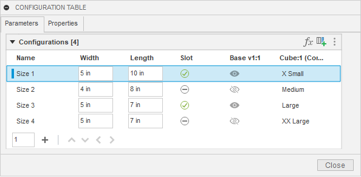
Below is a portion of the Fusion API object model that provides access to this configuration table. This main configuration table is known as the “Top” table. It is represented in the API by the ConfigurationTopTable object, obtained using the configurationTopTable property of the Design object. You can use the Design.isConfiguredDesign property to determine if the current Design is a configuration.
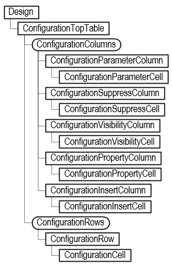
You can access the columns and rows from the top table. The object model shows several types of columns: parameter, suppression, visibility, property, insert, and theme columns. Each of these is described in more detail below.
A ConfigurationParameterColumn object defines which parameter is being controlled by the column, and it provides access to the cells that define the parameter value for each row. Like with standard Fusion parameters, the parameter's value can be obtained or set using either a string representing an expression or a Double value, the evaluated value in database units.
For example, for a parameter that is controlling a distance value, some valid expressions are “3”, “3 in”, “5 in / 2”, and “Length * 0.75”. The first one that just has a value uses the default design units, so if they’ve specified “mm” as the current design unit, it will be 3 mm, and if they’ve chosen inches, it will be 3 inches. The next one specifies units as part of the expression, so it will always be 3 inches regardless of the design units. The other two examples show that an expression can be an equation and include references to other parameters.
When getting the value, it is the evaluated result of the expression in database units. For example, for the expression “5 in / 2”, the value property will return 6.35. The internal length unit is centimeters, which is 2.5 inches converted to centimeters. Setting the parameter using the value property will automatically create an expression resulting in the specified value.
A ConfigurationSuppressColumn object defines which feature the column controls the suppression state for and provides access to the cells that define whether the feature should be suppressed for that row. The term “feature” is used loosely here and refers to anything that can be suppressed in the timeline, including features, sketches, construction geometry, joints, etc. The value of suppression cells is a Boolean, indicating if that feature should be suppressed when that row is active.
A ConfigurationVisibilityColumn object defines which entity the column controls the visibility for and provides access to the cells that define whether the entity should be visible for that row. The value of visibility cells is a Boolean, indicating if the entity should be visible when that row is active.
A ConfigurationInsertColumn object defines which row is used for a configuration inserted into the current Design and provides access to the cells that define which row to use. Each cell in the column specifies a specific row from the top table of the referenced configuration.
A ConfigurationPropertyColumn defines which property’s value is being controlled by the column, and it provides access to the cells that define the value to assign to the property when that row is active. Each cell contains the text that will be assigned to the property when that row is active.
A difference between the table shown in the user interface and the top table provided by the API is that properties are accessed from the top along with everything else. For the user interface, it was chosen to show the property columns in a separate tab. Having properties in a separate tab is an artificial separation, which the API doesn’t do. When iterating over the columns of the top table, the property columns will be the first columns returned. The remaining columns will be returned in the same order as in the CONFIGURATION TABLE dialog.
Below is a script that dumps out the contents of an existing table for the parameter, suppress, visibility, and property columns. It lists each column, showing its name and what it controls. It then lists the values for each row of the column. It writes this information to the TEXT COMMANDS window.
import adsk.core, adsk.fusion, traceback
def run(context):
ui = None
try:
app = adsk.core.Application.get()
ui = app.userInterface
# Get the top configuration table from the design.
des: adsk.fusion.Design = app.activeProduct
topTable = des.configurationTopTable
# Iterate through the columns, writing out info for each one.
column: adsk.fusion.ConfigurationColumn = None
columnCount = 0
for column in topTable.columns:
columnCount += 1
if isinstance(column, adsk.fusion.ConfigurationParameterColumn):
paramColumn: adsk.fusion.ConfigurationParameterColumn = column
app.log(f'Column {columnCount} ({paramColumn.title}) is a Parameter column controlling "{paramColumn.parameter.name}"')
for i in range(topTable.rows.count):
paramCell = paramColumn.getCell(i)
app.log(f' Expression from row {i+1} is "{paramCell.expression}"')
elif isinstance(column, adsk.fusion.ConfigurationPropertyColumn):
propColumn: adsk.fusion.ConfigurationPropertyColumn = column
app.log(f'Column {columnCount} ({propColumn.title}) is a Property column controlling "{propColumn.parentProperty.name}"')
for i in range(topTable.rows.count):
propCell = propColumn.getCell(i)
app.log(f' Value from row {i+1} is "{propCell.value}"')
elif isinstance(column, adsk.fusion.ConfigurationSuppressColumn):
suppressColumn: adsk.fusion.ConfigurationSuppressColumn = column
app.log(f'Column {columnCount} ({suppressColumn.title}) is a Suppress column controlling "{suppressColumn.feature.name}"')
for i in range(topTable.rows.count):
supressCell = suppressColumn.getCell(i)
app.log(f' Value from row {i+1} is {supressCell.isSuppressed}')
elif isinstance(column, adsk.fusion.ConfigurationVisibilityColumn):
visibilityColumn: adsk.fusion.ConfigurationVisibilityColumn = column
app.log(f'Column {columnCount} ({visibilityColumn.title}) is a Visibility column controlling "{visibilityColumn.entity.name}"')
for i in range(topTable.rows.count):
visibleCell = visibilityColumn.getCell(i)
app.log(f' Value from row {i+1} is {visibleCell.isVisible}')
elif isinstance(column, adsk.fusion.ConfigurationInsertColumn):
insertColumn: adsk.fusion.ConfigurationInsertColumn = column
app.log(f'Column {columnCount} ({insertColumn.title}) is an Insert column controlling "{insertColumn.occurrence.name}"')
for i in range(topTable.rows.count):
insertCell = insertColumn.getCell(i)
app.log(f' Value from row {i+1} is "{insertCell.row.name}"')
else:
app.log( f'Other type of column found: {column.objectType}')
except:
if ui:
ui.messageBox('Failed:\n{}'.format(traceback.format_exc()))
For the configuration table shown above, the following results are displayed in the TEXT COMMANDS window.
Column 1 (Part Number) is a Property column controlling "Part Number"
Value from row 1 is "5x10S"
Value from row 2 is "4x8"
Value from row 3 is "5x5S"
Value from row 4 is "5x5"
Column 2 (Description) is a Property column controlling "Description"
Value from row 1 is "5 x 10 Box with Slot"
Value from row 2 is "4 x 8 Box"
Value from row 3 is "5 x 5 Box with Slot"
Value from row 4 is "5 x 5 Box"
Column 3 (Width) is a Parameter column controlling "Width"
Expression from row 1 is "5 in"
Expression from row 2 is "4 in"
Expression from row 3 is "5 in"
Expression from row 4 is "5 in"
Column 4 (Length) is a Parameter column controlling "Length"
Expression from row 1 is "10 in"
Expression from row 2 is "8 in"
Expression from row 3 is "5 in"
Expression from row 4 is "5 in"
Column 5 (Slot) is a Suppress column controlling "Slot"
Value from row 1 is False
Value from row 2 is True
Value from row 3 is False
Value from row 4 is True
Column 6 (Base v1:1) is a Visibility column controlling "Base v1:1"
Value from row 1 is True
Value from row 2 is False
Value from row 3 is True
Value from row 4 is False
Column 7 (Cube:1 (Configured Component Insert)) is an Insert column controlling "X Small v1:1"
Value from row 1 is "X Small"
Value from row 2 is "Medium"
Value from row 3 is "Large"
Value from row 4 is "XX Large"
Using the API, you can convert a design into a configured design. This requires creating the initial configuration table, adding columns for the items you want to control, adding rows for the number of configurations required, and setting the values of the cells to get the expected results.
Changing a design into a configured design is done using the createConfiguredDesign method of the Design object. This returns the ConfigurationTopTable object that was created. When you first create a configured design, columns are automatically created for the “Component Name”, “Part Number”, and “Description” properties, and one row is created with a default name. You can add columns and rows and edit the cells to have the desired values.
The sample code below converts the current design and adds a new parameter, suppression, visibility, and insert columns. When adding a parameter column, specify which parameter the column will control. The code below gets the parameter named “Length” and uses that when creating the column. The suppression column needs to know which “feature” will be suppressed. In this case, it gets the feature named “Fillet1” and uses it to create the column. The visibility column needs to know what entity to control the visibility for. This gets the sketch named “Sketch1” and uses it to create the column. The insert column needs to know the occurrence of an inserted configuration. This example uses the first occurrence in the Occurrences collection to create the column
import adsk.core, adsk.fusion, traceback
def run(context):
ui = None
try:
app = adsk.core.Application.get()
ui = app.userInterface
# Get the active design.
des: adsk.fusion.Design = app.activeProduct
# Convert this design into a configured design.
# The first row is created automatically, and the columns for
# properties are also automatically created.
topTable = des.createConfiguredDesign()
# Add a new parameter column for the parameter "Length".
param = des.allParameters.itemByName('Length')
lengthColumn = topTable.columns.addParameterColumn(param)
# Add a new suppress column to suppress a feature.
feature = des.rootComponent.features.itemByName('Fillet1')
suppressColumn = topTable.columns.addSuppressColumn(feature)
# Add a new visibility column to show/hide a sketch.
entity = des.rootComponent.sketches.itemByName('Sketch1')
visibleColumn = topTable.columns.addVisibilityColumn(entity)
# Add a new insert component column.
configOcc = des.rootComponent.occurrences[0]
insertColumn = topTable.columns.addInsertColumn(configOcc)
except:
if ui:
ui.messageBox('Failed:\n{}'.format(traceback.format_exc()))
Here is the table that results after running the code above. Remember that the first row is automatically created when the table is created. As you add columns, the columns' cells are also automatically created with default values, which are the current values of whatever the column controls. In this case, the Length parameter has an expression of “3 in”, the Fillet1 feature is not suppressed, the sketch Sketch1 is not visible, and the inserted configuration uses the " Medium " configuration.
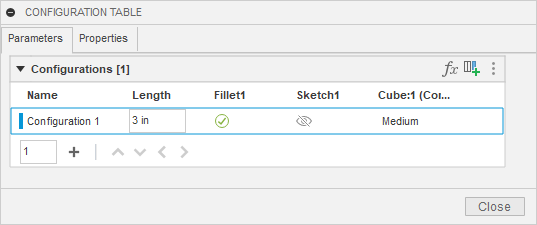
The example code below edits the name of the first row because it was assigned a default name when the row was automatically created when the table was created. It adds two rows and specifies their names as part of their creation. Like before, all the cells are automatically created and populated with default values.
# Rename the first row. row1 = topTable.rows.item(0) row1.name = ‘My Row 1’ # Add two more rows. row2 = topTable.rows.add(‘My Row 2’) row3 = topTable.rows.add(‘My Row 3’)
Here is the top table after changing the name of the first row and adding two other rows.
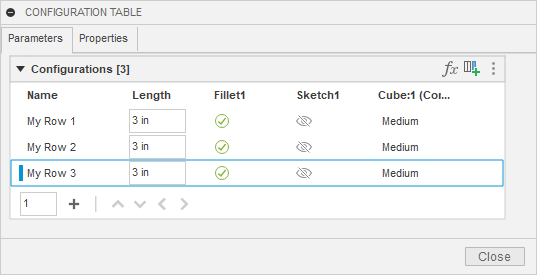
Now, we need to change the cell values to the desired values. Once you’ve created the tables and rows, it becomes a series of edit operations to modify the cells to the desired values. The code below does that for the cells in the parameter, suppressed, and visibility columns.
# Set the values in the three rows for the parameter column. lengthColumn.getCellByRowName('My Row 1').expression = '4 in' lengthColumn.getCellByRowName('My Row 2').expression = '6 in' lengthColumn.getCellByRowName('My Row 3').expression = '8 in' # Set the values in the three rows for the suppress column. suppressColumn.getCellByRowName('My Row 1').isSuppressed = False suppressColumn.getCellByRowName('My Row 2').isSuppressed = True suppressColumn.getCellByRowName('My Row 3').isSuppressed = False # Set the values in the three rows for the suppress column. visibleColumn.getCellByRowName('My Row 1').isVisible = True visibleColumn.getCellByRowName('My Row 2').isVisible = False visibleColumn.getCellByRowName('My Row 3').isVisible = True
There are several ways to get a specific cell. This example does it by getting the cell within the column in the row with the specified name. This produces the most readable code, but you can also use the getCell method, which takes the row index, or getCellByRowId, which uses the unique ID of the row. This gets the cells from the column, but you can also access cells from a row. For example, the code below gets the cell in the first row for the parameter column.
row1.getCellByColumnIndex(lengthColumn.index).expression = '4 in'
It doesn’t matter how you get the cell; the different methods are provided to make it convenient depending on what information you already have. Below is the result after running the code above. Where you can see the values of the parameter, suppress, and visibility columns have been modified.
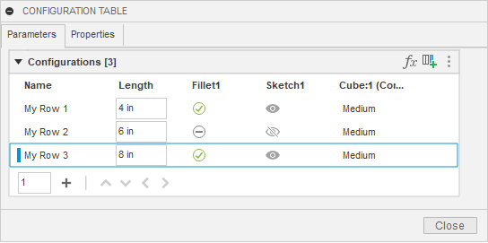
Setting the cell values for the insert columns is more complicated because when setting the value of an insert cell, you need to provide a row from the table of the configured design that’s been inserted. Let’s look at this in more detail to see what’s going on. Below is the table of a configured design that has size rows that define different sizes for the parameter called “CubeSize”. In our example, an instance of this configured design has been inserted into the other design we’re now configuring by defining the table.
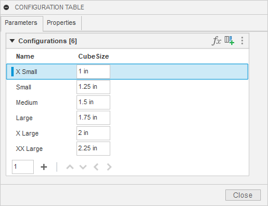
Here’s the table of the design we’re now configuring. The last column controls the inserted configuration. Each row currently has a default value of “Medium”, which means the rows are using the row from the other configuration called “Medium”. We want to modify those cells to use different rows. To do that we need to get the ConfigurationRow object for the row we want to use, but that row exists in a different design.
The code below gets the ConfigurationTopTable from the configured design that’s been inserted into the current design. The first thing it does is get the occurrence in the current design that is being controlled by the insert column. It then calls the configuredDataFile property on the Occurrence object. This returns the DataFile that represents the other configured design. A DataFile is an API object that represents a file in the cloud. The “Data” portion of the API lets you traverse your projects and folders to find specific files on the cloud. With this DataFile, you can call its configurationTable property to get the ConfigurationTopTable of that design.
configOcc = insertColumn.occurrence
configDesignDataFile = configOcc.configuredDataFile
refTopTable: adsk.fusion.ConfigurationTopTable = configDesignDataFile.configurationTable
Because the DataFile represents a design that’s on the cloud and not open in Fusion, the table that’s returned operates in a limited way. For example, you can’t modify it in any way, but it does support query capabilities which is all we need to find a specific row. The code below uses the itemByName property of the ConfigurationRows object to get a specific row. It then assigns that row to the cell that will control which configuration should be used for that row.
smallRow = refTopTable.rows.itemByName('Small')
insertColumn.getCellByRowName('My Row 1').row = smallRow
xLargeRow = refTopTable.rows.itemByName('X Large')
insertColumn.getCellByRowName('My Row 2').row = xLargeRow
mediumRow = refTopTable.rows.itemByName('Medium')
insertColumn.getCellByRowName('My Row 3').row = mediumRow
After running this code, we now have the table shown below. You can see the different cell values in the last column now.
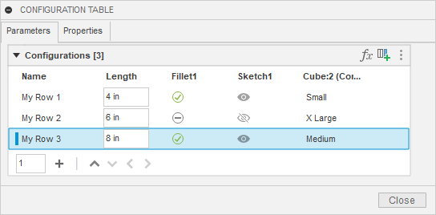
The example configuration table above is simple but demonstrates commonly used functionality: parameters, suppression, visibility, properties, and component insertion. However, Fusion configurations also support some more complex capabilities, which are also supported by the API. These capabilities result in additional tables being created that are referenced from the top table. These are referred to as “theme” tables.
There are five types of theme tables: ConfigurationCustomThemeTable, ConfigurationAppearanceTable, ConfigurationMaterialTable, ConfigurationSheetMetalRuleTable, and ConfigurationPlasticRuleTable. When any of these types of tables are created, a new ConfigurationThemeColumn is added to the top table. This column references the new theme table, and each row in the column specifies which row in the theme table to use when that row is active.
A custom theme table allows you to have a set of columns within a sub table and then reference rows of the sub table within the top table. The picture below shows the user interface where a parameter, suppression, visibility, and insert column have been moved to a custom theme table. As a result, a new ConfigurationThemeColumn has been created in the top table.
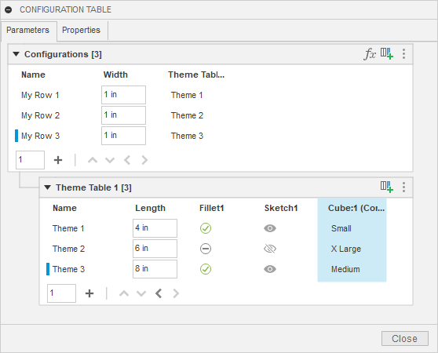
The object model diagram below is expanded to show the objects that support the custom theme table capabilities. The top table provides access to the ConfigurationThemeColumn objects in the top table. In the example above, the theme table column provides access to the referenced ConfigurationCustomThemeTable and the cells in the top table that define which row in the theme table to use for each configuration. Any number of custom theme tables can be created.
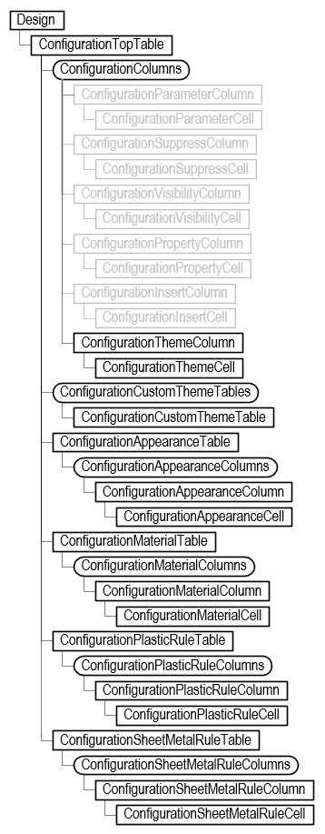
The code below demonstrates the creation of the custom theme table shown in the picture above. This is done by adding a new custom theme table and specifying the columns you want to move into the new table.
import adsk.core, adsk.fusion, traceback
def run(context):
ui = None
try:
app = adsk.core.Application.get()
ui = app.userInterface
# Get the active design.
des: adsk.fusion.Design = app.activeProduct
# Get the top table.
topTable = des.configurationTopTable
# Get the columns that will be moved into a custom theme table.
columns = []
for column in topTable.columns:
if 'Length' in column.title:
columns.append(column)
elif 'Fillet1' in column.title:
columns.append(column)
elif 'Sketch1' in column.title:
columns.append(column)
elif 'Cube:1' in column.title:
columns.append(column)
# Create the new custom table.
customTable = topTable.customThemeTables.add(columns)
except:
if ui:
ui.messageBox('Failed:\n{}'.format(traceback.format_exc()))
Here is the resulting configuration table.
A custom theme table is similar in functionality to a top table. You can use the same code, as previously discussed, to add new columns and rows and edit the values of cells. The main limitation of custom theme tables is that they never contain references to other theme tables. It’s only the top table that references theme tables.
The other four types of theme tables are like each other in that they only contain information specific to that type of table and there is only one table of that type for a design. For example, a material theme table only contains material columns and there is only one material table for a design. Below, is an example of a configuration that contains a material table. When you create a material or appearance table, a column to control the material or appearance of the root component is automatically added and the column you add will always be the second column.
Below is an example of a material column to control the material assigned to a body. Like a top table, the first row in all theme tables is automatically created with the current values in the design as the cell values. A second row has been added with a different material assigned to it.
# Add a material column to the material table. If this is the # first material defined in the configuration, this will cause # the material table to be visible in the CONFIGURATION TABLE # dialog. body = des.rootComponent.bRepBodies.itemByName('Body1') materialColumn1 = topTable.materialTable.columns.add(body) # Edit the name of the first row in the material table. materialTable = topTable.materialTable materialTable.rows[0].name = 'Default' # Add a second row. materialRow = materialTable.rows.add('Gold') # Change the values of the cells on the second row to use the "Gold" material. goldMaterial = app.materialLibraries.itemByName('Fusion Material Library').materials.itemByName('Gold') matCell: adsk.fusion.ConfigurationMaterialCell = materialRow.getCellByColumnIndex(0) matCell.material = goldMaterial matCell = materialRow.getCellByColumnIndex(1) matCell.material = goldMaterial # Get the material column in the top table and edit cell values. materialThemeColumn = materialTable.parentTableColumn themeCell = materialThemeColumn.getCell(0) themeCell.referencedTableRow = materialTable.rows[1] themeCell = materialThemeColumn.getCell(1) themeCell.referencedTableRow = materialTable.rows[0] themeCell = materialThemeColumn.getCell(2) themeCell.referencedTableRow = materialTable.rows[1]
Here is the resulting configuration table.
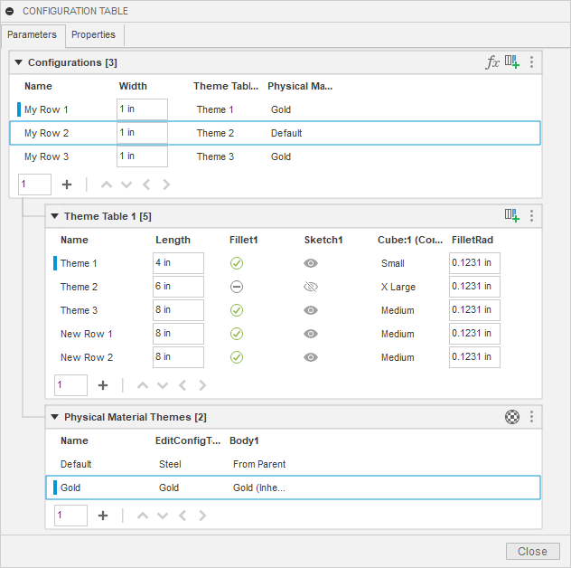
As mentioned earlier, besides custom theme tables, there are four other types of theme tables that a ConfigurationThemeColumn in the top table can reference. These are ConfigurationAppearanceTable, ConfigurationMaterialTable, ConfigurationSheetMetalRuleTable, and ConfigurationPlasticRuleTable. There are two critical differences between a custom theme table and the other types of theme tables. A custom theme table can contain several different types of columns, and there can be any number of custom theme tables. The other four tables only contain one type of column, and only one table of each type can exist. For example, there is only one ConfigurationAppearanceTable, which only contains appearance information. You can use it to control the appearance assigned to components and bodies.
Feature aspects are another thing that you can control through a configuration. They let you control specific aspects of certain types of features. For example, you can define the thread information for features with a thread and control the snap locations and alignment settings associated with a joint. Each aspect is added as a new column to the configuration table, where you can set their value for each row.
You can fully control a thread through a configuration. If you interactively create a thread using the Thread command, you'll see there are several things you need to specify: type, size, designation, and class. All the other aspects of a thread (size, designation, and class) must also be defined when defining the thread type. You can let the feature define the type so no column is created for it, but then the size, designation, and class must be defined. If you let the feature define the type and size, then the designation and class columns must be defined. Finally, if you let the feature define the type, size, and designation, then only the class needs to be defined. The addThreadTypeColumns method can be used to create the required columns.
The code below demonstrates feature aspects for threads. To use it, create a new design that contains a single thread feature approximately 1 inch in diameter. The code will convert the design into a configured design and then add columns to the table to control whether the thread is modeled and provide the full thread definition. It then creates a second row in the table and populates the cells of the first and second rows with valid data.
def run(context):
ui = None
try:
app = adsk.core.Application.get()
ui = app.userInterface
des: adsk.fusion.Design = app.activeProduct
# Get the first thread feature in the design.
threadFeat = des.rootComponent.features.threadFeatures[0]
# Convert the design to a configured design.
configTable = des.createConfiguredDesign()
# Add a new column to control if the thread is modeled or not.
modeledColumn = configTable.columns.addFeatureAspectColumn(threadFeat, adsk.fusion.ConfigurationFeatureAspectTypes.ThreadModeledFeatureAspectType)
# Add a new column to control the thread.
threadColumns = configTable.columns.addThreadTypeColumns(threadFeat, adsk.fusion.ConfigurationThreadColumns.ThreadType_Size_Designation_ClassColumns)
# Create a second row.
row2 = configTable.rows.add('')
# Modify the cells of the two rows to define if the thread is modeled.
modeledCell: adsk.fusion.ConfigurationFeatureAspectBooleanCell = modeledColumn.getCell(0)
modeledCell.value = False
modeledCell: adsk.fusion.ConfigurationFeatureAspectBooleanCell = modeledColumn.getCell(1)
modeledCell.value = True
# Modify the cells of the two rows to define the desired threads. This takes advantage of the fact
# that the array returned by addThreadTypeColumns is in type, size, designation, and class order.
rowIndex = 0
typeCell: adsk.fusion.ConfigurationFeatureAspectStringCell = threadColumns[0].getCell(rowIndex)
typeCell.value = 'ACME Screw Threads'
sizeCell: adsk.fusion.ConfigurationFeatureAspectStringCell = threadColumns[1].getCell(rowIndex)
sizeCell.value = '1 1/8'
designationCell: adsk.fusion.ConfigurationFeatureAspectStringCell = threadColumns[2].getCell(rowIndex)
designationCell.value = '1.1250'
classCell: adsk.fusion.ConfigurationFeatureAspectStringCell = threadColumns[3].getCell(rowIndex)
classCell.value = '3G'
rowIndex = 1
typeCell: adsk.fusion.ConfigurationFeatureAspectStringCell = threadColumns[0].getCell(rowIndex)
typeCell.value = 'ISO Metric profile'
sizeCell: adsk.fusion.ConfigurationFeatureAspectStringCell = threadColumns[1].getCell(rowIndex)
sizeCell.value = '25.0'
designationCell: adsk.fusion.ConfigurationFeatureAspectStringCell = threadColumns[2].getCell(rowIndex)
designationCell.value = 'M25x2'
classCell: adsk.fusion.ConfigurationFeatureAspectStringCell = threadColumns[3].getCell(rowIndex)
classCell.value = '6g'
except:
if ui:
ui.messageBox('Failed:\n{}'.format(traceback.format_exc()))
Thread information is defined using strings and validated as the cell values are set. It can be difficult to know what the valid values are. The code below can be used to determine valid values for a specific thread. Manually create a thread feature with the thread you want to configure, and then run the script below. It will write the needed values to the TEXT COMMAND window for that specific thread.
run(context):
ui = None
try:
app = adsk.core.Application.get()
ui = app.userInterface
# Have a thread feature selected.
feature = ui.selectEntity('Select a thread feature.', adsk.core.SelectionFilters.Features).entity
if feature.objectType != adsk.fusion.ThreadFeature.classType():
ui.messageBox('A thread feature must be selected.')
return
threadFeat: adsk.fusion.ThreadFeature = feature
# Display the information that defines the selected thread.
app.log(f'Thread Information for {threadFeat.name}')
app.log(f' Thread Type: "{threadFeat.threadInfo.threadType}"')
app.log(f' Thread Size: "{threadFeat.threadInfo.threadSize}"')
app.log(f' Thread Designation: "{threadFeat.threadInfo.threadDesignation}"')
app.log(f' Thread Class: "{threadFeat.threadInfo.threadClass}"')
except:
if ui:
ui.messageBox('Failed:\n{}'.format(traceback.format_exc()))
The script above is only reading data from the table. However, reading information from an existing table is also helpful. Once a table exists, the most common need is to identify a specific row from the table to either activate that row in the design or place the configuration of that row into another design.
To activate a row in the top table, get the ConfigurationRow object and call the activate method. Knowing the name of the row you want to activate is common. Activating a known row is demonstrated in the code below, where it gets the row named “Size 3” and activates it.
import adsk.core, adsk.fusion, traceback
def run(context):
ui = None
try:
app = adsk.core.Application.get()
ui = app.userInterface
des: adsk.fusion.Design = app.activeProduct
topTable = des.configurationTopTable
row = topTable.rows.itemByName('Size 3')
row.activate()
except:
if ui:
ui.messageBox('Failed:\n{}'.format(traceback.format_exc()))
Activating a row is the same as choosing the active configuration in the browser.
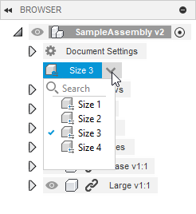
Many items in the configuration object model have a name, and they also have an ID. Names are typically more straightforward to use and make your code more readable. However, the user can modify the name, so it may not be reliable. An ID is a string that uniquely identifies the object and can be used to access it using the itemById method. They’re not as easy to use because they’re a string that doesn’t indicate what it is. For example, here’s the ID for a table row: 0cee2327-8ac6-44a5-aae0-e7d76b716d05. Fusion automatically assigns ID’s and they will never change, so they are a reliable way of finding a specific object. Both are available, and you can decide what will work best for you depending.
The other functionality that might be considered an edit or write operation supported in the current release is inserting a configuration into an assembly. To place a configuration, specify which top table row in the configured design you want to use. We’ve seen above how you can access the table of an open configured design and find a specific row. However, the configured design will not typically be open when inserting a configuration in an assembly.
The API provides access to your files on the cloud through the Data object. DataHub, DataProject, DataFolder, and DataFile objects let you traverse your files on the cloud. The DataFile has some new configuration-related functionality. The isConfiguredDesign property tells you if the file is a configured design or not. The isConfiguration property also tells you if this design is a configuration, which is the file Fusion creates that represents a specific row in the table. If the isConfiguredDesign property returns true, you can use the configurationTable property to get the ConfigurationTopTable object from the design. Because the configured design is not open in Fusion, there are some limitations to what you can do with the table, but most of the query functionality works to find a specific row. You need a ConfigurationRow object to add an occurrence representing that configuration into an assembly.
The script's results are below. It prompts you to select a configured design and places an instance of each configuration into an assembly, laying them out into a column-row structure.
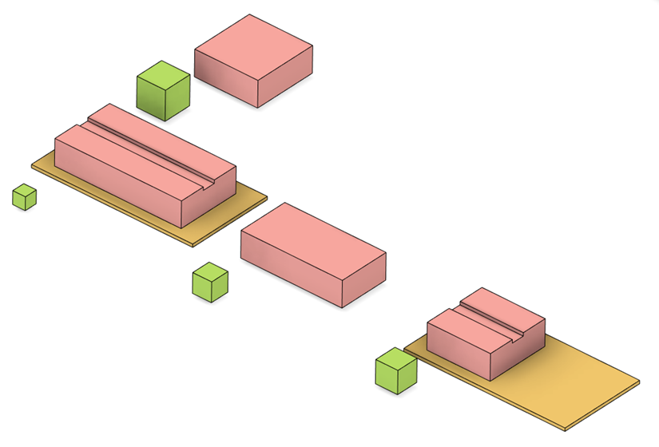
Below is the code that creates the assembly above. Because it’s using the DataFile object, the configured design does not need to be open in Fusion.
import adsk.core, adsk.fusion, traceback
def run(context):
ui = None
try:
app = adsk.core.Application.get()
ui = app.userInterface
# Have the configured design selected.
fileDialog = ui.createCloudFileDialog()
fileDialog.isMultiSelectEnabled = False
fileDialog.title = 'Select the Configured Design'
# Show file open dialog
dlgResult = fileDialog.showOpen()
file: adsk.core.DataFile = None
if dlgResult == adsk.core.DialogResults.DialogOK:
file = fileDialog.dataFile
else:
return
# Check that the selected design is a configured design.
if not file.isConfiguredDesign:
ui.messageBox('The selected design must be a Configured Design.')
return
# Get the top table.
topTable: adsk.fusion.ConfigurationTopTable = file.configurationTable
# Create a new design to add all of the configurations to.
newDoc = app.documents.add(adsk.core.DocumentTypes.FusionDesignDocumentType)
newDes: adsk.fusion.Design = newDoc.products.itemByProductType('DesignProductType')
# Prompt for the filename to save the design. Saving a design before inserting an
# occurrence is no longer a requirement in Fusion, but the API still requires it.
# This is a temporary limitation.
fileDialog = ui.createCloudFileDialog()
fileDialog.title = 'Specify Assembly Filename'
dlgResult = fileDialog.showSave()
if dlgResult == adsk.core.DialogResults.DialogOK:
filename = fileDialog.filename
folder = fileDialog.dataFolder
newDoc.saveAs(filename, folder, 'Assembly of Configuratoins', '')
else:
return
# Get the Occurrences collection of the root component.
occs = newDes.rootComponent.occurrences
# Specify some values that will control how the occurrences are laid out.
offset = 5 # Defines the distance between occurrences.
maxColumns = 3 # Defines the number of items in a column before a new row is started.
# Iterate through the configurations (rows in the table) and place each one.
xOffset = 0
yOffset = 0
currentY = 0
currentX = 0
colCount = 0
originTrans = adsk.core.Matrix3D.create()
first = True
newColumn = False
row: adsk.fusion.ConfigurationRow
for row in topTable.rows:
# Place the occurence using the matrix. For the first occurrence this is an
# identity matrix, which will place the occurrence at the origin.
configOcc: adsk.fusion.Occurrence = occs.addFromConfiguration(row, originTrans)
colCount += 1
if first:
first = False
# Get the size of the first occurrence and use it to determine the offset
# distance for both the columns and rows for the other occurrences.
bounds = configOcc.preciseBoundingBox
# This is the first placement, so leave the occurrence at the origin.
xOffset = bounds.maxPoint.x - bounds.minPoint.x
yOffset = bounds.maxPoint.y - bounds.minPoint.y
# Calculate the position of the next occurrence.
if colCount == maxColumns:
currentX = 0
currentY = currentY + yOffset + offset
colCount = 0
else:
currentX = currentX + xOffset + offset
originTrans.translation = adsk.core.Vector3D.create(currentX, currentY, 0)
ui.messageBox('Finished.')
except:
if ui:
ui.messageBox('Failed:\n{}'.format(traceback.format_exc()))